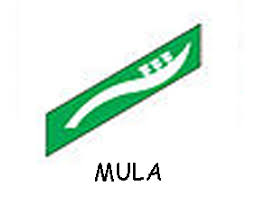
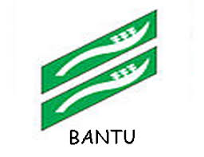
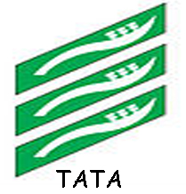

Siaga
Siaga merupakan sebutan anggota pramuka yang memiliki umur 7-10 tahun, disebut pramuka siaga karena sesuai dengan kiasan pada masa perjuangan bangsa indonesia, yaiu saat rakyat indonesia mensiagakan dirinya untuk mencapai kemerdekaan dengan ditandai berdirinya Boedi Oetomo tahun 1908 sebagai tonggak awal perjuangan bangsa indonesia.
Satuan terkecil pada pramuka siaga disebut Barung dan satuan-satuan dari beberapa barung disebut perindukan, setiap barung beranggotakan 5-10 orang pramuka siaga dan dipimpin oleh seorang pemimpin barung yang dipilih anggota barung itu sendiri.
Masing-masing pemimpin barung ini nanti akan memilih satu orang dari mereka yang akan menjadi pemimpin barung utama yang disebut denganSulung, Perindukan terdiri dari beberapa barung yang dipimpin sulung.
Dalam Pramuka Siaga terdapat tiga tingkat, yaitu:
- Mula

- Bantu

- Tata

Setiap anggota barung yang sudah menyelesaikan SKU(Syarat Kecakapan Umum)berhak mengenakan TKU(Tanda Kecakapan Umum)sesuai tingkatannya yang dikenakan pada lengan baju sebelah kiri dibawah tanda barung berwarna dasar hijau, TKU untuk siaga memiliki bentuk sebuah janur atau disebut mancung yakni bunga pohon kelapa yang baru tumbuh
Kode Kehormatan Pramuka Siaga
Kode Kehormatan bagi Pramuka Siaga, terdiri dari:
- Janji Dwisatya, selengkapnya berbunyi:
Dwisatya
- Demi kehormatanku aku berjanji akan bersungguh-sungguh:
- Menjalankan kewajiban tuhan dan negara kesatuan republik indonesia(NKRI) dan menurut aturan negara
- Setiap hari akan berbuat baik
- Ketentuan moral yang disebut Dwidarma, yang berbunyi
Dwidarma
- Siaga patuh pada ayah dan ibunya
- Siaga berani dan tak putus asa
Materi Pramuka Siaga
sementara pada materi latihan pramuka siaga merupakan sekumpulan standar kompetensi yang wajib dipenuhi oleh setiap angggoata pramuka siaga, materi-materi itu disiapkan dalam latihan pramuka yang diolah sebuah permainan.
materi yang dibungkus pada bentuk permainan ini mengandung unsur pendidikan serta nyanyian yang menarik dan menyenangkan, pelaksanaannya, materi latihan diharapkan memiliki sifat modern, bermanfaat dan taat pada asas-asas.